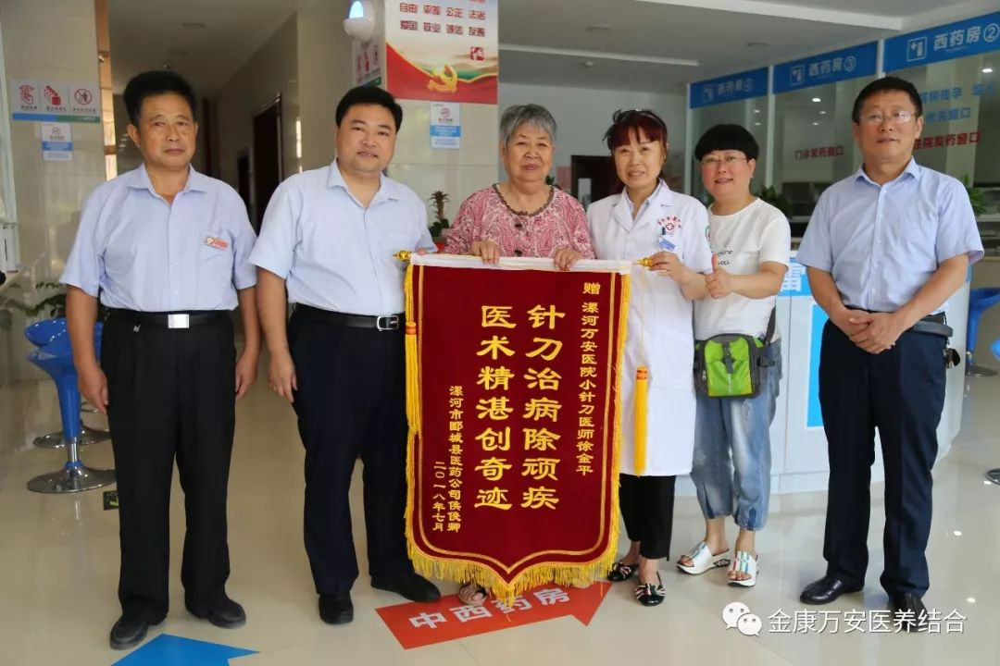
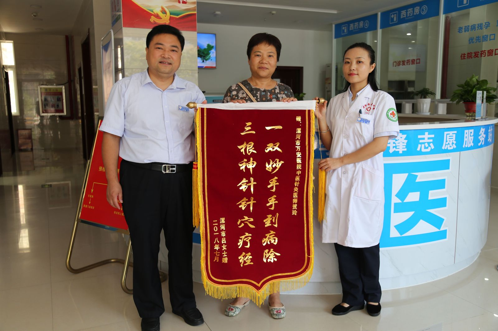
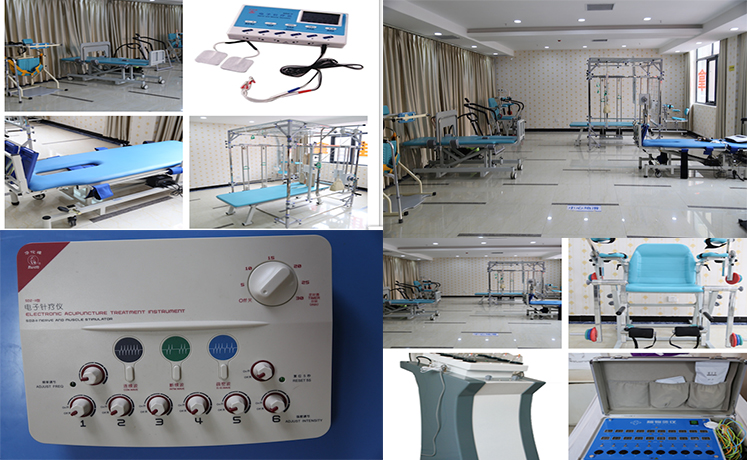
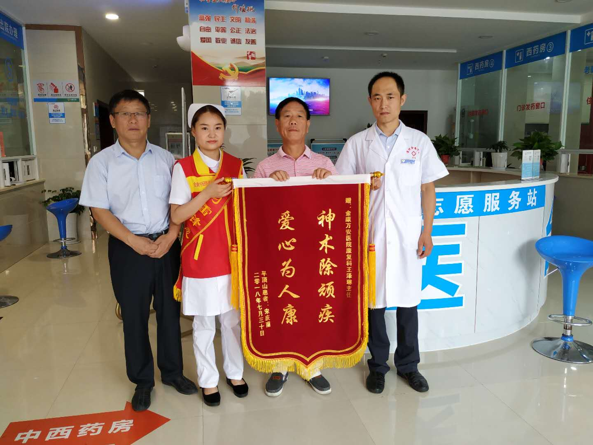

康复科现有医护团队15人，其中副主任医师1名，主治医师2名，康复师3名，均在国内康复医学前沿科室进修培训，具有丰富的临床经验。康复科设有门诊部，住院部，其中门诊面积达500平方米，设有 针灸推拿治疗室，中药熏蒸治疗室，PT运动治疗室、OT作业治疗室、容大五行颈腰椎综合治疗室、物理因子治疗室。病区面积800平方米，设置床位60张，全区治疗环境温馨舒适。
主要开展
对偏瘫康复、截瘫康复、面瘫康复、吞咽语言康复、颅脑损伤后功能障碍、脊髓损伤后功能障碍、骨关节功能障碍、疼痛康复、颈肩腰腿痛及骨折等患者进行康复治疗和功能训练，以及应用小儿推拿手法治疗儿童呼吸系统、消化系统等疾病。
-

-
患者候奶奶脑梗塞后遗症已有8年，不能正常走路，胳膊不能抬起。在徐医生的"小针刀"治理下，不但能抬起，现在还能拿梳子梳头了！另外候奶奶由于脑梗塞导致的脚趾并拢也伸开了，也能正常走路了。候奶奶能生活自理了，祝贺候奶奶康复～～
患者周爷爷腰椎狭窄、坐骨神经痛、下肢麻木。来我院治疗之前去过好多地方治疗只能缓解症状，后来经病友介绍来我院康复科治疗，经过康复科徐金平医师治疗15天后恢复正常!恭喜周爷爷康复～～
患者王女士患有颈椎压迫头部造成 头晕、头疼、头部抽筋，来我院之前曾在舞阳、柳江等多地治疗，效果不好，来康复科进行生物电治疗后，在王四杰医师的指导下，各种症状有所减轻，现在失眠症状也减轻了许多，祝王女士早日康复！
患者李女士患有半脚板损伤、滑膜炎，造成腿不能抬走路抬不起来，膝关节肿胀疼痛，已经十多年了，上楼只能拖着走，经过了生物电治疗两个疗程20天后，在王四杰医师的康复指导下，已经可以正常走路了，腿也不疼了不肿了，祝贺李女士！
患者张女士患有乳腺增生，有结节，经期前胀痛，硬块肿大，不能走路和跑跳，经过15天的生物电调理和专业的腋下淋巴排毒后，肿块消失结节散开，走路不疼了，经期也没有胀痛的感觉了！祝贺张女士
-

-

-
患者王女士患有腰椎间盘突出症，腰疼，腰部疼痛 走路困难，已经十多年了，一直没治好，在好几个医院治理效果甚微，经人介绍后，在康复科叶医师的“针灸、按摩“理疗下，1个疗程患者解除病痛 走路基本正常，腰部疼痛消失了,祝王女士早日痊愈
患者叶女士患有颈椎间盘突出，患者头晕，恶心，肩部疼痛，在家人的搀扶下，来我院就诊，经过叶医师的针灸，颈椎推拿治理下，患者病情缓解，头晕症状消失 头部活动正常,祝叶女士早日康复
患者李女士腹部偏大，患者要求减肥，在叶医师的调理下，经过针灸推拿后，现在腹部多余脂肪消失，腹部基本恢复到了正常体态，祝贺李女士。
患者王先生腰椎间盘突出、间隙狭窄、压迫神经，右腿麻木不能走路5年了，在家人的搀扶下来到万安医院康复科治理，在贺医师的生物电针灸及悉心调理下，经过1个疗程的治理后，患者基本解除病痛，走路已经不需要家人的陪伴，生活可以自理了，祝王先生身体更加健康！
宋先生53岁，于2018年6月5日患脑梗塞，出现右侧上下肢麻木不适，严重影响日常生活。曾经在市内其它医院住院治疗一个多月，花费上万元医疗费效果不佳，后经朋友介绍来到我院康复科治疗，经王泽林医生针灸治疗一周后右侧上下肢麻木明显缓解；二周后现在右侧肢体麻木已经基本消失。宋先生为了表达感谢之心特意送来锦旗！
-
